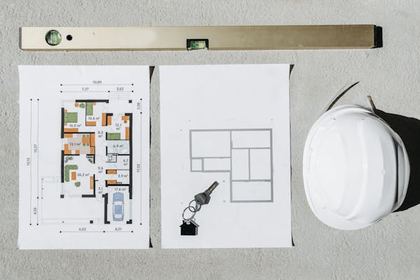

Our approach
Survey information built for real decisions.
Earth Scope Company Ltd supports land, property and infrastructure needs through surveying, planning and consultancy services. The redesigned site now presents that work with a more consistent, trustworthy and modern visual identity.
1
Understand the objective
Define the property, project stage and expected outcome.
Define the property, project stage and expected outcome.
2
Work from evidence
Combine field observations, measurements and available records.
Combine field observations, measurements and available records.
3
Deliver usable information
Prepare survey outputs that support planning, approvals or construction.
Prepare survey outputs that support planning, approvals or construction.

Capabilities
One professional identity across every service.
Land
Deed plans, mutations, sectional property, planning and rural surveys.
Engineering
Construction, topographic, pipeline and utility survey support.
Property
General property consultancy informed by surveying and site context.
Need a survey?
Start with the property, project objective and location.